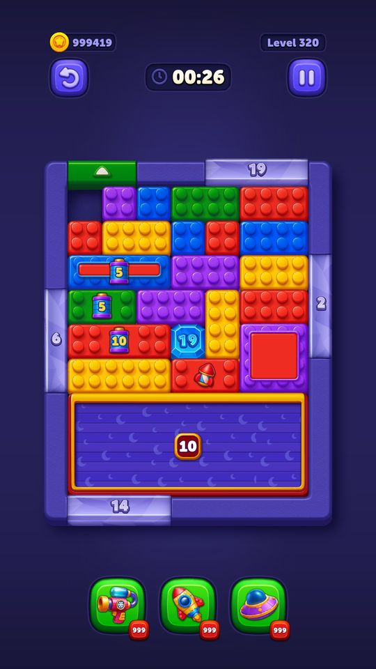
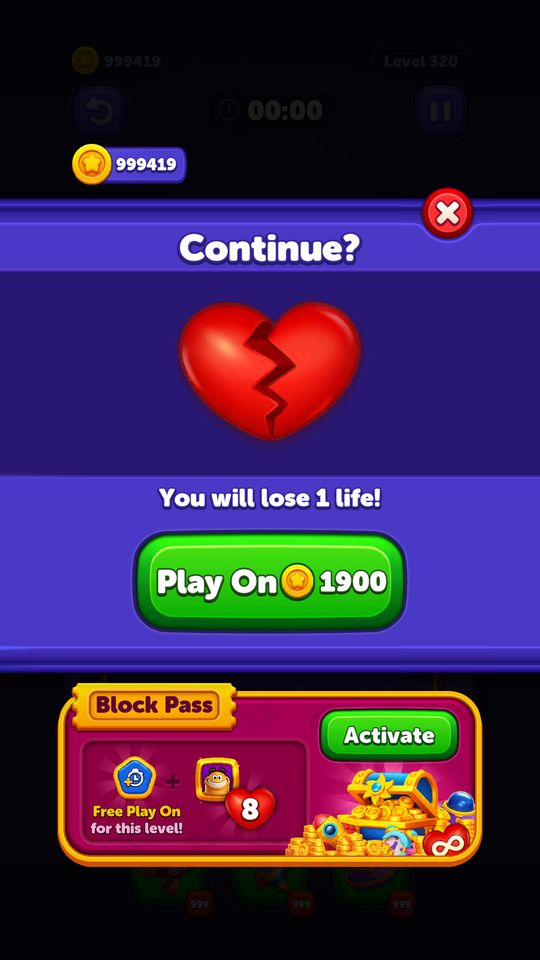

Play On (chơi tiếp khi sắp thua)
Khi hết giờ hoặc bom nổ, thay vì mất màn người chơi có thể trả coin để được cộng thêm thời gian và chơi tiếp trên đúng bàn đang dở.
Mô tả
- Khi hết giờ hoặc bom nổ, thay vì mất màn người chơi có thể trả coin để được cộng thêm thời gian và chơi tiếp trên đúng bàn đang dở.
- Giá leo thang theo số lần dùng trong cùng một màn.
- Đây là nguồn tiêu coin lớn nhất của game.
- Có sẵn cả nhánh đổi bằng quảng cáo nhưng nhánh đó đang bị tắt trên server.
Còn thiếu / chưa xác minh
Mở khóa & điểm vào
Có sẵn từ đầu. Bản quảng cáo có giới hạn số lần mỗi ngày và thời gian hồi.
Điểm vào:
- Popup thua (StuckState)
Cách hoạt động
- Cấu hình Play On đến từ hai nguồn và có tranh chấp rõ ràng: PlayOnConfigService.GetPlayOnConfigModel() ưu tiên _grandPlayOnConfigModel (tải thẳng từ backend, cache ở GrandConfigs/GrandCachedPlayOnConfig) nếu PlayOnConfigModelFromBackend.IsEnabled = true; không thì dùng bản Firebase.
- Trên bản đang chạy, IsEnabled = true nên bản backend thắng: giá 900 / 1900 /
 2900 coin cho lần 1 / 2 / 3, mỗi lần cộng 30 giây (bom cũng 30 giây).
2900 coin cho lần 1 / 2 / 3, mỗi lần cộng 30 giây (bom cũng 30 giây). - Bản Firebase thì cả ba lần đều 900.
- Khi người chơi bấm nút: TryUse() kiểm tra số dư rồi trừ coin; OnButtonClicked(extraTime) cộng giờ; nếu thua vì bom thì BombBlockObstacle.PlayOnBomb(bombAdditionalTime).
- Nhánh quảng cáo đi qua TryUseWithRewarded(): PlayOnRewardedRequirementsSatisfied() kiểm tra hạn mức ngày qua PlayOnWithRewardedDataService.GetDailyPlayOnUsedCount(), IsCooldownComplete(now) so với RemoteTimeService để chống spam; xem xong thì IncreaseDailyPlayOnUsedCount() và ResetDailyPlayOnCountIfNewDay() tự reset sang ngày mới.
Luồng chi tiết theo code
Cấu hình Play On đến từ hai nguồn và có tranh chấp rõ ràng: PlayOnConfigService.GetPlayOnConfigModel() ưu tiên _grandPlayOnConfigModel (tải thẳng từ backend, cache ở GrandConfigs/GrandCachedPlayOnConfig) nếu PlayOnConfigModelFromBackend.IsEnabled = true; không thì dùng bản Firebase. Trên bản đang chạy, IsEnabled = true nên bản backend thắng: giá 900 / 1900 / 2900 coin cho lần 1 / 2 / 3, mỗi lần cộng 30 giây (bom cũng 30 giây). Bản Firebase thì cả ba lần đều 900. Khi người chơi bấm nút: TryUse() kiểm tra số dư rồi trừ coin; OnButtonClicked(extraTime) cộng giờ; nếu thua vì bom thì BombBlockObstacle.PlayOnBomb(bombAdditionalTime). Nhánh quảng cáo đi qua TryUseWithRewarded(): PlayOnRewardedRequirementsSatisfied() kiểm tra hạn mức ngày qua PlayOnWithRewardedDataService.GetDailyPlayOnUsedCount(), IsCooldownComplete(now) so với RemoteTimeService để chống spam; xem xong thì IncreaseDailyPlayOnUsedCount() và ResetDailyPlayOnCountIfNewDay() tự reset sang ngày mới.
Ảnh chụp màn hình (5)
5 ảnh chụp trong game (LDPlayer, bản 1006, tài khoản thử level 320 → 350 (07/10/2026)). Bấm ảnh để phóng to; nhãn UC dẫn tới use case tương ứng.
 900 coin (lần 1), nút X để bỏ cuộc
900 coin (lần 1), nút X để bỏ cuộc

900 coin, đồng hồ +30 giây (00:26), chơi tiếp 1.900 coin (bậc 3 là 2.900)
1.900 coin (bậc 3 là 2.900)

 1 life!" — vẫn Play On 1.900 coin, banner Block Pass bên dưới
1 life!" — vẫn Play On 1.900 coin, banner Block Pass bên dưới 900 coin, banner Block Pass bên dưới
900 coin, banner Block Pass bên dướiSố liệu chính
| Chỉ số | Giá trị | Nguồn |
|---|---|---|
| PlayOnConfigModel.PlayOnModels[0].Price | 900 | PlayOnConfigModel.PlayOnModels[0].Price — Assets/Resources/defaultconfigs/PlayOnConfigModel.json |
| PlayOnConfigModel.PlayOnModels[0].LevelTimerAdditionalTime | 30 | PlayOnConfigModel.PlayOnModels[0].LevelTimerAdditionalTime — Assets/Resources/defaultconfigs/PlayOnConfigModel.json |
| PlayOnConfigModelFromBackend.ConfigType | 1 | PlayOnConfigModelFromBackend.ConfigType — Assets/Resources/defaultconfigs/PlayOnConfigModelFromBackend.json |
Use case (6)
Bấm vào từng use case để mở. Mở/đóng tất cả
UC-01 Mua Play On bằng coin
Các bước- GetCurrentPlayOnPrice() trả giá theo lần thứ mấy trong màn
- TryUse() kiểm tra số dư
- InventoryService.Spend(CurrencySpendReason.PlayOn, Coin, giá)
- GetCurrentPlayOnDuration(isBomb) trả số giây cộng thêm
- OnButtonClicked(extraTime) cộng vào LevelTimer
- BasicLevelManager.PlayOn() -> ActivePlayState
| Actor | Player |
|---|---|
| Trigger | Bấm nút Play On |
| Điều kiện | Đủ coin |
| Kết quả | Chơi tiếp, không mất mạng |
| Quy tắc / số liệu | Giá server đang chạy: 900 / 1900 / 2900. Bản Firebase (dự phòng): 900 / 900 / 900. isFirstPlayOnFree = false |
| Evidence | PlayOnLogicHandler.GetCurrentPlayOnPrice; TryUse; GetCurrentPlayOnDuration; OnButtonClicked; PlayOnConfigService.GetPlayOnConfigModel |
UC-02 Play On bằng quảng cáo
Các bước- ShouldShowRewardedPlayOn() quyết định có hiện nút không
- PlayOnRewardedRequirementsSatisfied(): GetCurrentRewardedPlayOnWatchCount() so với hạn mức
- IsCooldownComplete(now) dùng giờ server từ RemoteTimeService
- TryUseWithRewarded() phát quảng cáo qua AdService (AdRequestSource.PlayOnWithRewarded)
- Xem xong -> GetCurrentRewardedPlayOnDuration(isBomb) cộng giờ
- IncreaseDailyPlayOnUsedCount()
| Actor | Player |
|---|---|
| Trigger | Bấm nút xem quảng cáo ở popup thua |
| Điều kiện | Chưa hết hạn mức ngày, đã qua thời gian hồi |
| Kết quả | Chơi tiếp miễn phí, đổi lại xem quảng cáo |
| Quy tắc / số liệu | Nhánh này đang TẮT trên bản đang chạy: GrandCachedAdConfig.playOnWithRewardedEnabled = false, nên nút xem quảng cáo không hiện và Play On chỉ mua được bằng coin. Khi bật, cơ chế dùng giờ server (RemoteTimeService) chứ không dùng giờ máy nên đổi giờ điện thoại không lách được. |
| Evidence | PlayOnLogicHandler.ShouldShowRewardedPlayOn; PlayOnRewardedRequirementsSatisfied; IsCooldownComplete; TryUseWithRewarded; PlayOnWithRewardedDataService.IncreaseDailyPlayOnUsedCount; enum AdRequestSource |
UC-03 Play On khi thua vì bom
Các bước- GetCurrentPlayOnDuration(isBomb: true) trả bombAdditionalTime
- BombBlockObstacle.PlayOnBomb(extraTime) đặt lại giờ bom
- Về ActivePlayState
| Actor | Player |
|---|---|
| Trigger | Bom nổ rồi bấm Play On |
| Điều kiện | - |
| Kết quả | Bom được gia hạn thay vì cộng giờ màn |
| Quy tắc / số liệu | bombAdditionalTime: server 30 giây, client mặc định 15 giây |
| Evidence | PlayOnLogicHandler.GetCurrentPlayOnDuration; BombBlockObstacle.PlayOnBomb |
UC-04 Hạn mức quảng cáo reset sang ngày mới
Các bước- ResetDailyPlayOnCountIfNewDay() so ngày lưu với ngày hiện tại
- Khác ngày -> đặt lại bộ đếm về 0
- MarkForLateUpdate(shouldSyncWithBackend) đẩy thay đổi lên server
| Actor | System |
|---|---|
| Trigger | Qua nửa đêm theo giờ server |
| Điều kiện | - |
| Kết quả | Mỗi ngày lại có hạn mức mới |
| Quy tắc / số liệu | Dữ liệu đồng bộ qua ISyncable — server biết số lần đã dùng |
| Evidence | PlayOnWithRewardedDataService.ResetDailyPlayOnCountIfNewDay; MarkForLateUpdate; SerializeModelForSync |
UC-05 Bỏ qua, chấp nhận thua
Các bước- ResetPlayOnWithRewarded() đặt lại bộ đếm lần dùng trong màn
- Chuyển sang màn hình thua / Try Again
| Actor | Player |
|---|---|
| Trigger | Đóng popup Play On |
| Điều kiện | - |
| Kết quả | Mất mạng, giá Play On của màn sau về lại mức 1 |
| Quy tắc / số liệu | Bộ đếm giá leo thang chỉ tính trong phạm vi một màn |
| Evidence | PlayOnLogicHandler.ResetPlayOnWithRewarded |
UC-06 Không đủ coin
Các bước- TryUse() trả false
- Mở store với StorePopUpSource.PlayOn / IAPReason.PlayOn
| Actor | Player |
|---|---|
| Trigger | Bấm Play On khi thiếu coin |
| Điều kiện | - |
| Kết quả | Dẫn thẳng sang bán coin |
| Quy tắc / số liệu | IAPReason.PlayOn = 3 dùng để quy nguồn doanh thu |
| Evidence | PlayOnLogicHandler.TryUse; enum StorePopUpSource; enum IAPReason |
Cấu hình (16)
Gộp mọi nguồn: const trong code, JSON mặc định trong Resources, bảng static, storage key, AB test, cờ server.
| Nguồn | Key | Kiểu | Giá trị | Ý nghĩa | Nơi định nghĩa |
|---|---|---|---|---|---|
| server info | GrandCachedPlayOnConfig.playOnModels | array | [{30s, bom 30s, 900}, {30s, bom 30s, 1900}, {30s, bom 30s, 2900}] | Bảng giá thật đang chạy, tải từ backend và cache trên máy | DeviceRuntime external/files/GrandConfigs/GrandCachedPlayOnConfig |
| code const | PlayOnConfigService.CachedDirectoryName / CachedFileName | string | GrandConfigs / GrandCachedPlayOnConfig | Nơi client cache cấu hình Play On của backend | PlayOnConfigService (const) |
| code const | Thứ tự ưu tiên cấu hình | logic | GetPlayOnConfigModel(): _grandPlayOnConfigModel == null -> dùng bản Firebase; ngược lại nếu PlayOnConfigModelFromBackend.IsEnabled thì dùng bản backend | Giải thích vì sao giá thật là 900/1900/2900 chứ không phải 900/900/900 | PseudoC/.../RemoteConfig/Scripts/PlayOnConfigService.c |
| analytics | play_on_config_updated | event | tham số: type (ConfigType), is_enable | Sự kiện bắn khi cấu hình Play On được cập nhật | PlayOnConfigService.SetPlayOnConfigModels (chuỗi đọc được trong pseudo-C) |
| json default | PlayOnConfigModel.PlayOnModels[0].Price | int | 900 | Assets/Resources/defaultconfigs/PlayOnConfigModel.json | |
| json default | PlayOnConfigModel.PlayOnModels[0].LevelTimerAdditionalTime | int | 30 | Assets/Resources/defaultconfigs/PlayOnConfigModel.json | |
| json default | PlayOnConfigModel.PlayOnModels[0].BombAdditionalTime | int | 30 — server đang chạy; mặc định client: 15 | Assets/Resources/defaultconfigs/PlayOnConfigModel.json | |
| server info | PlayOnConfigModel.playOnModels[1].levelTimerAdditionalTime | int | 30 — chỉ server gửi, client không đóng sẵn giá trị mặc định | DeviceRuntime CachedRemoteConfigs | |
| server info | PlayOnConfigModel.playOnModels[1].bombAdditionalTime | int | 30 — chỉ server gửi, client không đóng sẵn giá trị mặc định | DeviceRuntime CachedRemoteConfigs | |
| server info | PlayOnConfigModel.playOnModels[1].price | int | 1900 — chỉ server gửi, client không đóng sẵn giá trị mặc định | DeviceRuntime CachedRemoteConfigs | |
| server info | PlayOnConfigModel.playOnModels[2].levelTimerAdditionalTime | int | 30 — chỉ server gửi, client không đóng sẵn giá trị mặc định | DeviceRuntime CachedRemoteConfigs | |
| server info | PlayOnConfigModel.playOnModels[2].bombAdditionalTime | int | 30 — chỉ server gửi, client không đóng sẵn giá trị mặc định | DeviceRuntime CachedRemoteConfigs | |
| server info | PlayOnConfigModel.playOnModels[2].price | int | 2900 — chỉ server gửi, client không đóng sẵn giá trị mặc định | DeviceRuntime CachedRemoteConfigs | |
| server info | PlayOnConfigModel.applicationVersion | string | 1006 — chỉ server gửi, client không đóng sẵn giá trị mặc định | DeviceRuntime CachedRemoteConfigs | |
| json default | PlayOnConfigModelFromBackend.IsEnabled | bool | true — server đang chạy; mặc định client: false | Assets/Resources/defaultconfigs/PlayOnConfigModelFromBackend.json | |
| json default | PlayOnConfigModelFromBackend.ConfigType | int | 1 | Assets/Resources/defaultconfigs/PlayOnConfigModelFromBackend.json |
Backend / server
| Command | Chiều | Mục đích |
|---|---|---|
GET play-on config | client→server | lấy bảng giá Play On thật; kết quả cache vào GrandCachedPlayOnConfig |
Giao diện (UI)
| Element | Class | Mục đích |
|---|---|---|
| Popup Play On | Modules.Contexts.GamePlay.UI.StuckOfferCarouselController | băng chuyền lựa chọn |
Analytics (1)
| Event | Tham số | Khi nào |
|---|---|---|
play_on_config_updated | type, is_enable | khi nhận cấu hình mới |
Storage keys
PlayOnWithRewardedDataModel (số lần dùng trong ngày, ngày cuối)
Chưa đọc được / ghi chú
- Nhánh Play On bằng quảng cáo đang tắt (playOnWithRewardedEnabled = false) nên không quan sát được hành vi thật.
- Hạn mức số lần Play On bằng quảng cáo mỗi ngày và độ dài cooldown không nằm trong config nào đọc được — nhiều khả năng do backend trả trong response, chưa bắt được.
- PlayOnType trong GameEconomyModel.PlayOnConfigModels đều bằng 0 ở cả ba dòng nên không suy ra được ý nghĩa của enum này.
Tính năng liên quan
Vòng đời màn chơi Quảng cáo Cửa hàng Inventory
Nguồn đã đọc
- PseudoC/.../GamePlay/PlayOn/Scripts/PlayOnLogicHandler.c
- PseudoC/.../RemoteConfig/Scripts/PlayOnConfigService.c
- DeviceRuntime/decoded/play_on_config.json